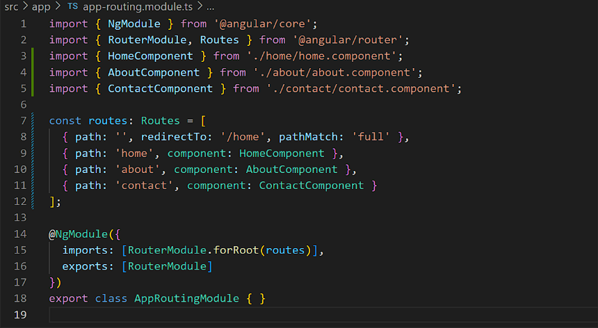
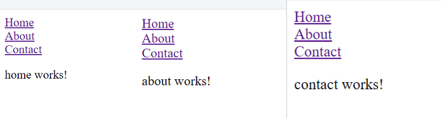

Output:

Code Explanation:
- A routes array is defined, where each object contains the URL path for the route and the component that should be displayed when the path is accessed.
- RouterModule.forRoot(routes) is added to the imports array. This configures the router with the provided routes at the root level of the application.
- The forRoot() method sets up the router and initializes the application's routing based on the specified routes.
- By modifying the app.module.ts file to include routing configuration, you enable Angular's router to handle navigation within your application.
- When users navigate to different paths (URLs), the router dynamically loads and displays the corresponding components without reloading the entire page, creating a seamless and efficient single-page application experience.